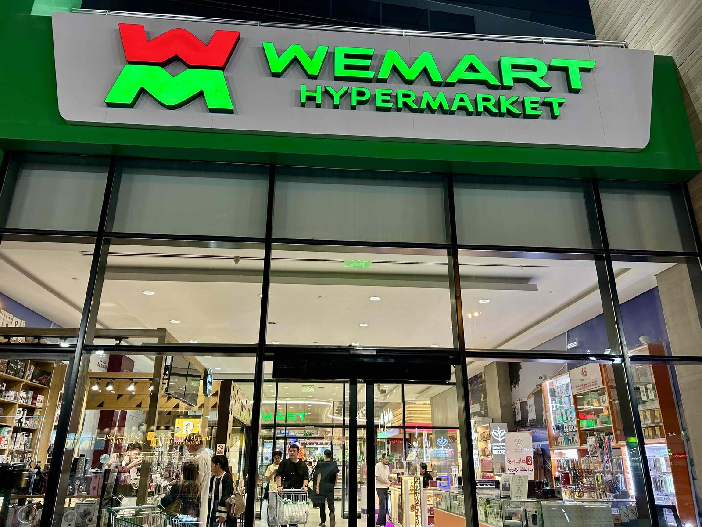
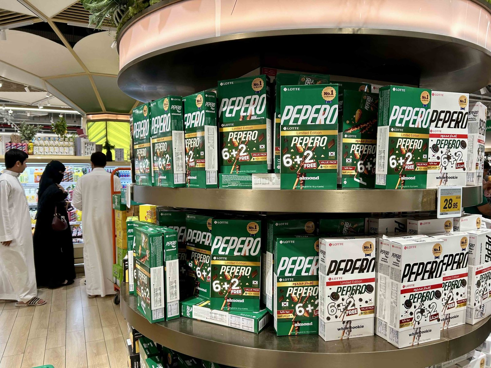
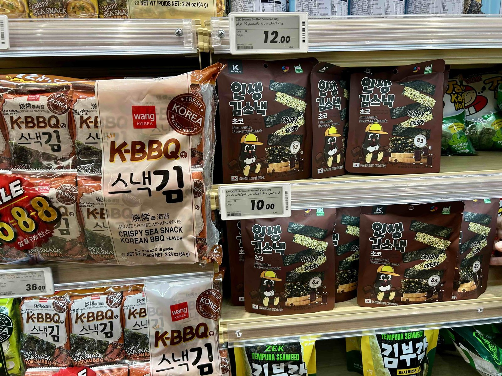
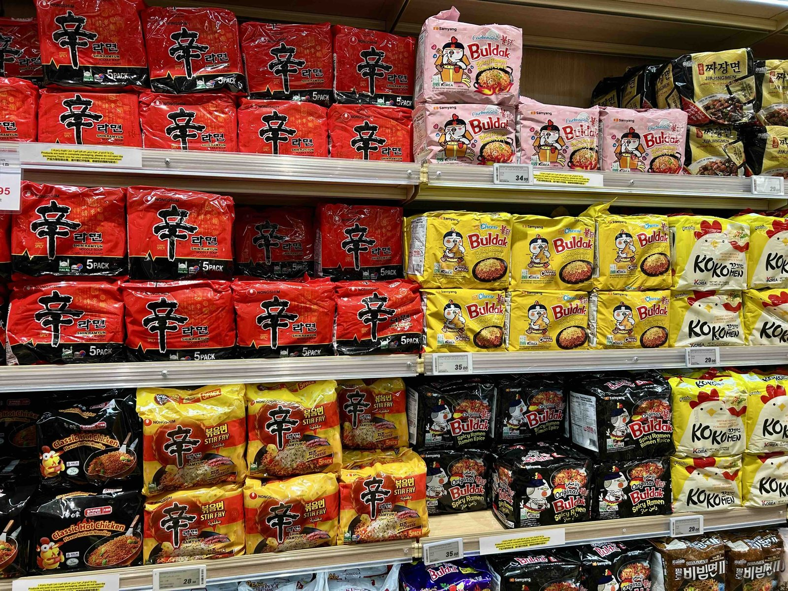
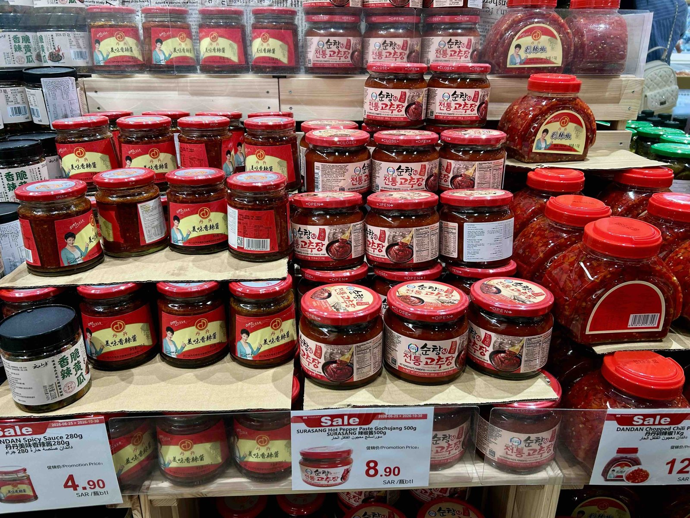
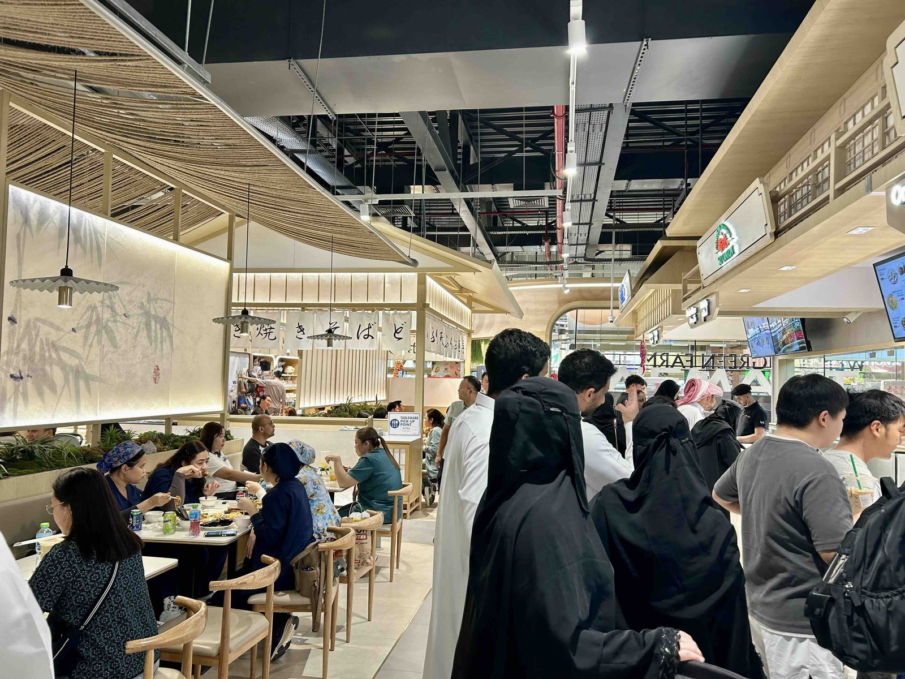
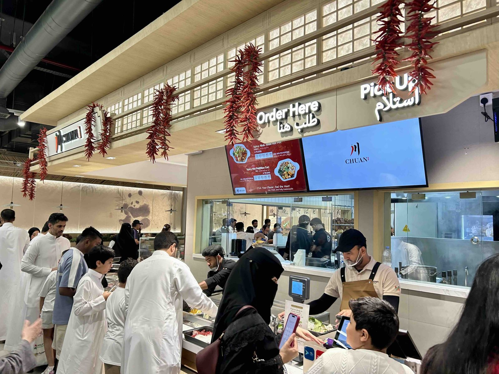
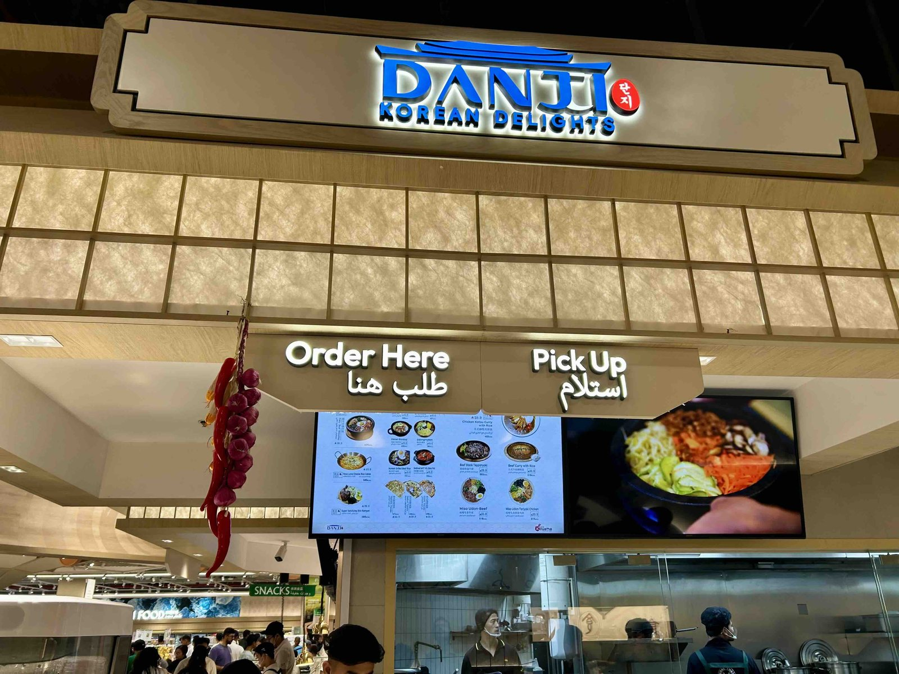
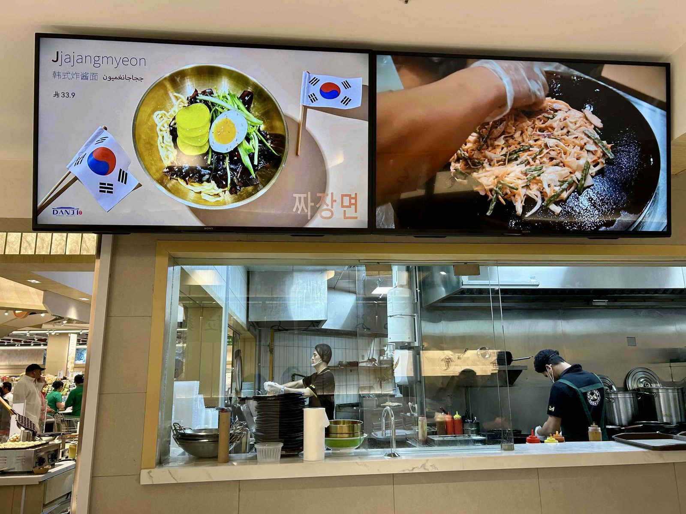

사우디아라비아 수도 리야드(Riyadh)에서 한국 식품을 만나는 일은 이제 그리 어렵지 않다. 대형 슈퍼마켓의 수입식품 코너뿐 아니라 아시아 식품 전문매장에서도 한국 라면과 과자, 김, 소스류 등을 쉽게 찾아볼 수 있다. 최근에는 완제품을 수입해 판매하는 것을 넘어, 비한국계 유통기업이 직접 한국 음식을 조리해 판매하는 모습도 나타나고 있다.
그중 흥미로운 곳이 리야드의 위마트(Wemart)다. 중국계 유통기업이 사우디에서 구축한 범아시아 식문화 공간 안에서 한국음식은 어떤 모습으로 소개되고 있을까. 통신원이 직접 위마트와 내부 푸드코트 위아시안(WeAsian)을 찾았다.
리야드에 문을 연 중국계 아시아 대형마트
위마트는 리야드 동부 알마나르(Al Manar) 지역 쿠라이스 스퀘어(Khurais Square)에 위치한다. 2024년 12월 28일 문을 연 사우디아라비아 첫 위마트 매장으로, 약 6,000㎡ 규모의 슈퍼마켓과 푸드코트를 결합한 형태로 운영되고 있다. 위마트를 운영하는 원차오그룹(WenChao Group)은 2006년 아랍에미리트 두바이에서 사업을 시작해 유통, 물류, 무역, 전자상거래 등으로 사업 영역을 확장해 온 중국계 기업이다. 리야드 위마트에 들어서면 중국 식품뿐만 아니라 한국, 일본, 필리핀, 베트남 등 다양한 아시아 지역의 식품과 식재료를 한자리에서 만날 수 있다.

리야드에 위치한 위마트 — 출처: 통신원 촬영
그중에서도 한국 식품의 존재감이 눈에 띈다. 농심 신라면과 삼양 불닭볶음면을 비롯한 다양한 한국 라면이 여러 선반을 채우고 있으며, 빼빼로, 김 스낵, 고추장 등도 쉽게 발견할 수 있었다. 특히 불닭볶음면은 오리지널뿐 아니라 치즈, 까르보나라 등 다양한 종류가 함께 판매되고 있었다.
해외의 아시아 식품 전문매장에서는 특정 국가의 식품만을 판매하기보다 여러 아시아 국가의 제품을 함께 취급하는 경우가 많다. 위마트 역시 중국 식품을 중심으로 한국과 일본, 동남아시아 등 범아시아 지역의 식품을 폭넓게 판매하며, 그 안에서 한국 식품도 주요 상품군 중 하나로 자리하고 있다.


위마트에서 판매하고 있는 한국 과자 — 출처: 통신원 촬영


다양한 한국 라면(왼쪽)과 중국계 양념 제품과 함께 진열된 한국산 고추장(오른쪽) — 출처: 통신원 촬영
범아시아 푸드코트에서 만난 한국 음식 코너 '단지'
위마트의 또 다른 특징은 슈퍼마켓과 연결된 위아시안(WeAsian)이다. 중국, 한국, 일본, 태국 등 여러 아시아권 음식을 한자리에서 판매하는 범아시아 푸드코트다.


현지 방문객들로 붐비는 위아시안 푸드코트 — 출처: 통신원 촬영
주말 오후 통신원이 방문한 위아시안은 음식을 주문하고 식사하는 사람들로 북적였다. 마라탕을 즐기는 현지인부터 가족과 친구 단위 방문객까지 남녀노소 다양한 소비자들이 아시아 음식을 즐기고 있었다. 특히 중국과 일본 음식을 판매하는 코너에 많은 방문객이 몰리는 모습이 눈에 띄었다.
이곳에서 한국 음식을 담당하는 코너는 '단지: 코리안 딜라이트(Danji: Korean Delights)'다. 간판에는 영문명과 함께 한글 '단지'가 적혀 있으며, 메뉴에도 태극기 등 한국을 상징하는 이미지가 적극적으로 사용되고 있다.


한국 음식 코너 '단지 코리안 딜라이트' — 출처: 통신원 촬영
메뉴 화면에서는 짜장면이 한글 '짜장면'과 태극기와 함께 한국 음식으로 소개되고 있었다. 짜장면은 중국의 작장면에서 유래해 한국에서 독자적으로 변형된 음식으로, 한국 안에서는 흔히 중식당의 대표 메뉴로 여겨진다. 그런 짜장면이 위마트의 범아시아 푸드코트에서 한국음식의 카테고리로 소개되고 있다는 점이 흥미롭다. 단지의 짜장면 한 그릇의 가격은 33.9리얄(약 1만 2,000원)으로 비빔밥, 떡볶이, 순두부찌개, 파전 등 한국에서 익숙한 다양한 메뉴를 판매하고 있었다.
케이푸드가 세계로 나갈수록 중요해지는 '소개 방식'
위마트에서 확인한 모습은 케이푸드의 확산이라는 측면에서 주목할 만하다. 한국계 유통업체가 아님에도 다양한 한국 식품이 판매되고 있으며, 푸드코트에는 한국 음식을 전담하는 코너까지 운영되고 있다. 리야드의 일부 한식당은 상대적으로 가격대가 높은 편이라, 현지 소비자에게는 진입장벽이 될 수 있다. 반면 단지에서는 짜장면을 비롯해 비빔밥, 순두부찌개, 파전 등 다양한 한식 메뉴를 대부분 20~40리얄대(약 8,000~1만 5,000원)의 비교적 부담 없는 가격에 즐길 수 있다. 현지 한인들 사이에서는 익숙한 한국의 맛과 다소 차이가 있다는 평가도 있지만, 이런 공간이 더 많은 현지인들에게 한국 음식을 접할 기회 자체를 넓히고 있다는 점은 분명 의미가 있다.
케이푸드의 세계화는 이제 한국계 사업자가 해외에 한국 음식을 소개하는 것을 넘어, 다양한 국적의 유통·외식업체가 한국 음식을 선택하고 소개하는 단계로 확장되고 있다. 그 과정에서 정통성과 접근성이라는 두 가치가 어떻게 균형을 이루어갈지, 앞으로도 지켜볼 부분이다.
사진출처 및 참고자료
— 통신원 촬영
— 위마트 본사 웹사이트, wemart.com
— 《알바와바(Albawaba)》 (2025. 01. 05.), “Grand Opening of WEMART Riyadh Store, Leading the Asian Wave in Saudi Arabia”, albawaba.com